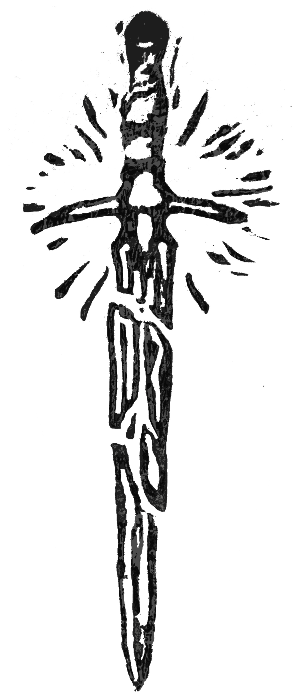
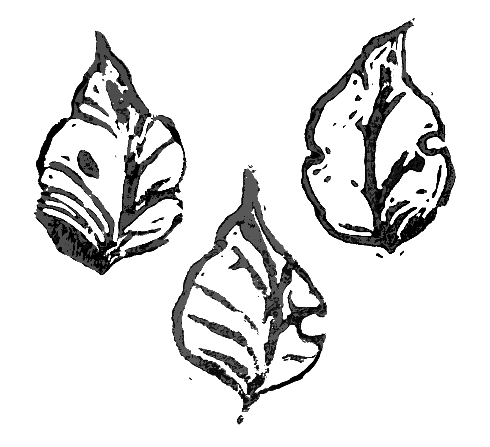

Portfolio / Linograbados
Diseños
Linograbados
Diseños disponibles para tatuar inspirados en la estética del linograbado, con líneas expresivas, textura visual y una composición pensada para funcionar sobre la piel.
Espada
Diseño disponible con estética de grabado, pensado para una pieza con presencia visual y buen contraste. Tamaño mínimo recomendado: 10 cm.
Abeja
Diseño de abeja trabajado con textura gráfica y línea marcada, inspirado en el lenguaje visual del linograbado. Tamaño mínimo recomendado: 9 cm.

Hojas
Diseño de hojas disponible para piezas pequeñas o composiciones repetidas. Tamaño mínimo recomendado: 3 cm por unidad.